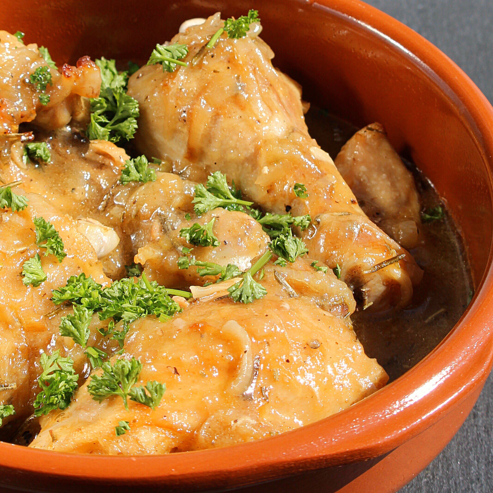

Pollo Alla Birra

Pollo Alla Birra for Two
Chicken and beer: so simple, yet, so good. This Italian classic is a perfect lunch or dinner for two. It uses a few ingredients but has a deep, complex flavor. The cornstarch helps create a thick and creamy sauce. Serve with mashed potatoes and a small salad for a complete meal.
Ingredients
- 2 skinless chicken leg quarters
- 1 large clove garlic, crushed
- 2 tablespoons dried rosemary, divided
- salt and freshly ground pepper to taste
- 1 cup beer
- 3 tablespoons cornstarch
- 3 tablespoons olive oil
- 1 medium yellow onion, halved and cut into 1/4-inch-thick slices
Steps
- Put the chicken in a large bowl with crushed garlic, 1 tablespoon rosemary, salt, and pepper. Pour beer over top and let rest for at least 30 minutes.
- Remove chicken from the marinade and pat dry with paper towels. Sprinkle cornstarch over the chicken to coat it completely. Reserve the marinade.
- Heat oil in a Dutch oven over medium heat. Add chicken and brown on all sides, about 3 minutes per side. Add onion. Remove garlic from the marinade and add to the Dutch oven with a bit of marinade to keep everything from burning. Saute until onion is tender and translucent, about 5 minutes.
- Add remaining marinade and remaining 1 tablespoon rosemary. Scrape the bottom of the pot to remove any browned bits. Lower the heat and simmer until the sauce has reduced and thickened and the chicken is no longer pink inside, about 15 minutes. Serve hot.